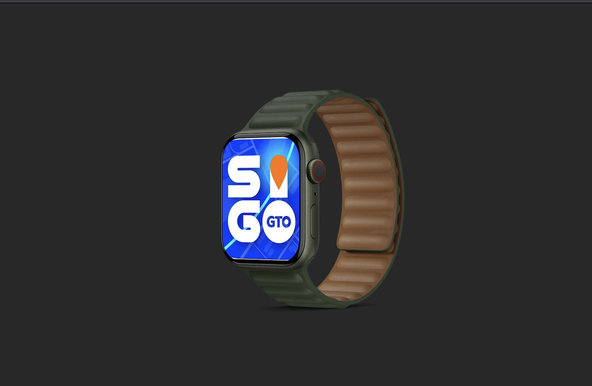
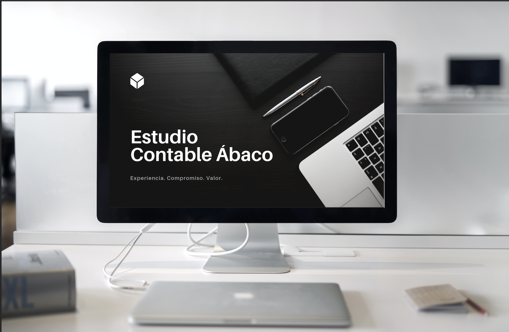

Portafolio
Welcome to my portfolio website where I showcase my creativity and expertise as a web designer. With years of experience in the industry,
I have had the pleasure of working with a diverse range of clients and businesses, each with their unique challenges and objectives.
Here, you will find a collection of my best work and projects that I have completed for clients in various industries.
From corporate websites to e-commerce platforms and mobile applications, I am confident that my portfolio demonstrates
my ability to design functional, engaging, and visually stunning digital experiences.
Projects
Movil app interface
The project consisted of developing the interface of a safe transportation mobile application
for a municipal government, my goal was to create an attractive and user-friendly experience. I achieved this by selecting a cohesive color palette,
incorporating clear icons for easy navigation, and optimizing the application for quick loading and seamless operation on any device.
Additionally,I conducted testing with real users to obtain valuable feedback that allowed me to make improvements and adjustments prior to launch.
The end result was a successful and well-received application that reflects the brand of the municipal government and enhances the experience of its citizens.
I am proud of my work on this project and excited to see how it will positively impact the community.
Corporative brand
In this project I worked on a corporate web design project for an accounting company.
The goal was to create a professional online presence that reflected the company's values
and personality while providing an engaging user experience.
I designed a cohesive logo
and visual elements, selected a color palette that conveyed the brand and atmosphere,
and ensured the website was fully responsive and optimized for fast loading on any device.
The end result was a high-quality corporate web design that reflects the professionalism
and dedication of the accounting company to its clients. I'm proud of my work on this project
and excited to see how it will help the company establish a strong online presence.